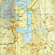
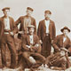

Artikel av Bengt Löf. Tidigare publicerad i tidningen Rovbladet.
Min morfar Edward Fernström från Sevallbo arbetade i skogen under större delen av sitt yrkesliv. Arbete fanns inte alltid under året i skogen och drivningarna pågick mest under vintern. Därför arbetade han ibland med torvbrytning under delar av våren - sommaren. Han var 28 år 1916 och arbetade då tillsammans med 15 – 20 andra med torvbrytning från början av maj månad på en torvmosse som kallas Stormossen. Denna högmosse ligger nära Ingsjön på upplandssidan av sjön och i stort sett i samma nivå som sjöns vattenyta. Söderfors Bruk ägde mossen med tillhörande torvströfabrik och var arbetsgivaren för arbetslaget. På bilden här intill, som är tagen på mossen omkring 1916, sitter morfar till vänster. Tyvärr har just torvbrytningen hos Söderfors Bruk inget bra arkiv att leta i så jag kan inte namnge de andra. Är det någon som känner igen dem?
Torvbrytningen startades vid förra sekelskiftet och då byggdes en skyddsvall för att skydda torvfabriken från högvatten. Den kallades ”Mossdammen” och var 2½ km lång och 1½ - 2 meter hög. Från Stormossen lutar marken från Ingsjön mot Tierpshållet och närmast mot en sjö som heter Vissjön och som ligger c:a en kilometer österut. Där hade man 1860 byggt en damm som kallas ”Tierpsdammen” för att sjön skulle bli ett vattenmagasin till de närliggande uppländska bruken efter det att sjön Tämnaren hade sänkts. Tierpsslätten ligger ju 18 meter lägre än Dalälven. Man planerade även att bygga en kanal till Ingsjön så att man kunde fylla på dammen med 3 kubikmeter per sekund. Detta projekt skrinlades dock 1864 enligt boken Söderfors av Sven Sjöberg.
Under maj månad 1916 fick manskapet vid torvmossen en obehaglig överraskning – en kraftig översvämning. Redan under april månad steg vattnet i sjön som har kontakt med Dalälven via Ingsån. På grund av riklig nederbörd och varm väderlek blev vårflödena mycket kraftiga i södra och mellersta Sverige enligt SMHI. Detta bevakades av pressen efterhand som vattnet rann nedströms. Samtidigt mullrade kanonerna i Verdun massivt under det pågående första världskriget.
Från den 2/5 och några veckor framåt kom oroväckande rapporter om översvämningar i Vansbro, Falun, Karlstad, Bollnäs, Ockelbo och Mora liksom i Gavleån, Ljungan, Indalsälven. Även Tämnaren och Åbyån i Östervåla hade extrem vattenföring. Mälaren hade c:a en meter högre vattenstånd än normalt och i Siljan gick timmerlänsorna sönder så att 200 000 timmerstockar drev iväg. Det var alltså inte bara fjällvatten som skapade problemen.
Så kom också nyheten den 16/5 att vid det pågående bygget vid Untra kraftverk byggdes skyddsvallar av 200 man. Även Untra Gård fick de existerande skyddsvallarna förstärkta. Trots detta brast skyddsdammen till den blivande inloppskanalen vid Untra inom några dagar.
Upsala Nya Tidning rapporterade om högvattnet och hade den 23/5 ett reportage från Ingsjön på första sidan. Reportern konstaterar att ”om ingen åtgärd vidtogs skulle Dalälven rinna genom Tierps socken och orsaka oberäknelig skada”. Det var i sanning en mycket lågmäld kommentar som troligen var till för att lugna allmänheten. Eller kanske det var en fråga som inte berörde Uppsalaborna?
Annat var det i den lokala Tierpsposten. Min morfar och hans kollegor under ledning av C. O. Östlund fick hastigt rycka ut och täta den bräckliga ”Mossdammen” vilket innebar kontinuerlig passning och provisoriska förstärkningar. Lördagen den 20/5 började vattnet rinna över Mossdammen och manskapet slet hårt den natten med att bära sten och torv vadande i vattnet på insidan av dammen.
Morfar berättade att de fick fylla på vallarna vid Ingsjön med två decimeter torv och det pågick dygnet runt. Vissa vattenmättade partier av dammen gungade under arbetslagets fötter och det hela kändes mycket olustigt. Om detta vittnade också Rickard Larsson från Munga by i Tierp.
Samma dag kommenderades alla arbetsföra män i de närliggande byarna ut till de båda dammarna av landshövdingen K. A. Hamilton i Uppsala. 50 man kom fram under kvällen i regn och med otillräcklig utrustning. Under söndagen kom flera män från andra byar i Tierp och Strömsbergs Bruks Skogsarbetare liksom militär från I 8 i Uppsala. Den 22/5 anlände också landshövdingen och han kunde konstatera att båda dammarna nu var ”ansenligt förstärkta”. Den dagen steg vattnet till ett maximum. I en senare rapport nämnde Tierpsposten att Dalälven i Tierps distrikt steg 1,93 meter som mest över den normala vattennivån. Det största flödet som uppmättes i Älvkarleby var 2000 kubikmeter per sekund. Under tisdagen den 23/5 sjönk nivån 5 cm och man kunde dra tillbaka de utkommenderade och blåsa faran över.
Det var en strong insats som torvarbetarna gjorde under de kritiska första dygnen och Östling fick senare under året en gratifikation av Tierp kommunalstämma på 300 kr som motsvarade tre månadslöner för honom. Även de andra arbetarna på torvmossen fick en extra lön av bruket bokförd den 22/5 med följande motivering i Söderfors Bruks kassabok: ”gratifikationer till personalen i torfmossen för svårt arbete vid motandet af Dalelfvens översvämningar 225 kr”. Morfar berättade att alla arbetare fick en tia var. Vi ser också i samma källa att Bruksförvaltaren Fritz Crona besökte arbetsplatsen. I kassaboken den 24/5 står det också om detta. ”Motorbåtsskjuts m. Bruksförvaltaren till torfmossen 2 kr”. Man kan förmoda att han delade ut tian. Detta blev verkligen en händelserik tid för morfar och mycket annorlunda jämfört med vad han tänkt sig när han efter vinterns skogsarbete började på Stormossen. Och naturligtvis en trevlig uppskattning motsvarande 2½ dagars lön för en bra insats.
Det var alltså en kamp för upplänningarna att bemästra situationen med denna kraftiga översvämning. Man kan bara gissa vad som hade hänt med Tämnaråns dalgång om vattenkanalen hade funnits till Vissjön. Hade vi fått en ny jordbruksslätt i Hedesunda eller en träskmark? Kanske lite gammalt folkmunsgroll mellan socknarna kunde ha ändrats. De fanns två talesätt i Tierp och Östervåla om Hedesundabor under 1800-talet enligt 1925 års Fatabur. Och de var inte särskilt vänliga. ”Hä ä lika stora sköttpengar på en värg som på en hesnkär” och uttrycket ”hesnungdom = mygg”. I det sista fallet har vi nu delat med oss av de aggressiva översvämningsmyggorna genom att sända de båda spjutspetsarna Aedes Stictius och Aedes Vexans som svar på tal. Och sedan har vi som sagt vattnat lite på Uppland ibland.
Vad gäller översvämningar lär inte historien ta slut här. Åren 1544, 1687, 1764, 1860, 1899, 1916 1966 och 1977 har varit kritiska år och enligt Räddningsverket kan en stor vårflod inträffa även i framtiden. I ett beräknat 100-årsflöde skulle dock Ingsjön klara sig tack vare den damm som byggdes 1953 i Ingsån. Men i beräkningar på högsta möjliga flöde blir der åter problem även för Tierpsborna. Sedan 1933 är ju också Vissjön utdikad så nu är risken större än 1916 om det skulle hända igen.
Men andra ord – den som lever får se.
{kind=link}
{kind=link}